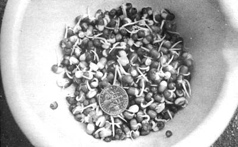

After I'd been acquainted with sprouting long enough to be objective, I wondered if Henry Thoreau had dabbled in the practice. He did plant those nine bean rows, I remembered, and the idea definitely would have fit his economics of simplicity . . . so I figured that-possibly-Henry D. had sprouted part of that crop.
A check of Walden and some of Thoreau's other writings produced no such record, however, in spite of the man's penchant for the wisdom of the East. But Henry would've admired sprouts-and so will you-because this particular form of gardening requires only seeds, warmth and moisture. That's right. For sprouts you don't even need sun, soil, tools, sprays, fences or the right kind of hat.
Sprouting is so simple, easy, inexpensive and offers such bonuses of freshness, vitamin and protein content that you'd think it would be common practice in inner-city ghettos and other poverty areas. Knowledge of sprouts in this country, however, seems to be cornered in various Chinatowns and among health "faddists" . . . even though-at one time or another, under the guise of Chinese cuisine-most of us have gobbled down the tasty little critters.
I know that I had eaten sprouts many times-both in Chinese restaurants and from cans of "Oriental" food-but, thinking that anything sold in a can was somehow specially produced, I'd never thought of growing them myself. Then a friend from New York City gave me some mung beans. "Put a tablespoonful in a cup of water overnight," said my sage advisor, "drain them in the morning, keep the beans dark (covered), not too warm and flush them with fresh water every four hours or so."
The experience was revelatory. I wondered how one tablespoon of mung beans in a dark closet could possibly turn into a lush miniforest . . . but they did! It was almost too much to eat those children of a miracle, so I contemplated them until it dawned on me that these were fresh vegetables. Unlike the supermarket-superhoax produce I had been buying which was "freshpicked" somewhere in Arizona or New Mexico sometime earlier in the month and shipped crosscountry . . . these were sure-puff fresh vegetables.
Well now, my friend had introduced me to a kind of of gardening I could really grok on . . . no spade, no hoe, no no rake, no mulching, no weeding and no stretching of string to keep rows straight. I was a convert to sprouts before I had even discovered most of their virtues.
For instance, sprouts require absolutely no cooking preparation . . . on washing (that's how you grew them, remember?), plucking, peeling, paring, coring or stringing. Nor do the little mini-vegetables need much cooking. Most are great raw and even the toughest and rankest are table-ready after being plopped in a pan and steamed or sauteed for the barest couple of minutes.
Smart homesteaders and urban dwellers alike find sprouts to be ideal, low-cost, fresh winter vegetables. Furthermore, this potent produce is very kind to the resources of the planet. When grown and consumed at home, they automatically eliminate wasteful transportation to the processor, processing, canning and labeling, the processor's markup, warehousing, transportation to a wholesaler, the wholesaler's markup, transportation to the retailer and the retailer's markup. That adds up to a lot of conservation of materials and energy.
The economics and ecologics of sprouts, however, are as nothing compared to their nutritional values. Vitamins, trace elements, protein, simple sugars . . . you name it and sprouts seem to have it, fresh and in lavish proportions. Numerous scientific experiments (see accompanying article) have verified that these mini-vegetables are indeed "the most living food on earth" and, when you dine on sprouts, you're feasting at the ground level of sensible nutrition.
Speaking of nutrition, I really became a Super-convert to home-grown shoots when I learned that research animals which show signs of malnutrition and starvation on a prolonged diet of American agribusiness vegetables are rejuvenated with-you guessed it-sprouts!
It's also interesting to note that most studies of germinated seeds in the human diet have been conducted in India, China and Europe by military doctors seeking to prevent beri-beri and scurvy in soldiers patroling one or another frontier of the white man's empire. About the only serious U.S. research on the subject was done during WWII when-in the face of severe fuel rationing, material shortages and high draft calls-our government was looking for ways to make this country's food industry more efficient. After the war, of course, vested interests neatly diverted dietary studies into more profitable channels . . . but just because funds and priorities are screwed up once again doesn't mean you have to stop enjoying the proven benefits which sprouts offer. Eat on!
I doubt that you'll soon tire of sprouts even if you make them a large part of your diet. Although many folks never graduate beyond mung beans, just about any seed imaginable can be turned into the delectable little shoots. Each has its own distinctive taste and the potential for variety is apparent. If, however, you ever do begin to find sprouts boring you can copy the Orientals by going one step further to produce soy paste (miso), soy sauce, soy "milk", bean curd and other condiments from the little beasties.
By the way, if you find you've eaten so much plastic food that you must acquire a taste for soy and some of the other stronger-flavored sprouts, simply chomp down on the crunchy critters a few times and you're halfway there . . . or gentle `em by steaming the shoots for a couple of minutes. Bear in mind, too, that some sprouts-such as wheat or sunflower-must be eaten before their length doubles or you'll find them too bitter and/or tangy. But these are the exception rather than the rule . . . most shoots taste A-OK even if harvested a little late.
And how do you go about sprouting your own? Casually . . . very casually. You won't even need to put out a penny for equipment, although some elaborate sprouters with tiered trays cost all the way up to the $17.00 neighborhood. Even an ordinary bowl (that's what I use for sprouting wheat) works if you carefully drain the seeds after each sprinkling and I've found that a cheap rummage sale colander is great for larger seeds like mung and soy. Gauze bags, sink strainers and the "nests" from old coffee percolators will also make suitable sprout gardens.
To run off a batch of fresh mini-vegetables, just soak your beans, alfalfa seeds or whatever overnight in enough water to cover them as they swell. Drain and flush the seeds in the morning and place them in your colander, a ceramic flowerpot resting on two pencils, inverted mason jar with wire gauze over the top or almost anything that will allow the sprouts to remain moist but well-drained.
Let the developing shoots grow in the dark for three to four days. They should be rinsed with clean water every four or five hours but don't lose any sleep over such a rigid schedule. Just water the tiny plants when you go to bed, again when you get up and-if possible-in the middle of the day.
Your little organic vegetables should peak out at highest nutritional content after about 72 hours of growth . . . but give or take 12 hours or so if temperatures in your minigarden are higher or lower than normal.
Don't make the boner I pulled once when-to make sure I'd have "enough"-I threw in a quarter cup of seeds instead of a tablespoonful. That quarter cup mushroomed into such a jungle of shoots that some spoiled before I could eat them. Be content, then, to turn two or three cents worth of seed into thirty cents worth of vegetables . . . unless you have a pet hippo to feed.
You can eat even more economically if you grow your own sprouting stock in an outdoor garden. Soybeans, for instance, mature in 90 days and can be raised in most parts of the country. Why not turn one soybean into many and then sprout the many into even more fresh vegetables? It might be interesting to take one pound of beans, alfalfa or wheat . . . sow the seed . . . harvest the crop . . . sprout the rep and see how many meals are provided.
But enough theory, speculation and evangelical discourse. On with your sprouting! Here's a few tantalizing recipes to inspire you.
Pile fruit in a cereal bowl and top with equal amounts of sprouted wheat and fresh wheat germ. Add a tablespoon of sunflower seeds for special effects. Serve with milk and honey.
Heat some healthy-type oil in a frying pan or griddle while you beat two eggs till your wrist is sore. Chop a small fistful of sprouts and grate or slice 1/8 to 1/4 cup of cheese. Spread the beaten egg on the griddle, dump on the cheese and sprouts and fold the egg up over the mountain of nutrition. Flip the omelette and let it cook till you think it's done. Voila! A low-cost, high protein, crunchy breakfast treat.
Fry sprouts five minutes in butter seasoned with a little sea salt. Serve with meat.
Simmer sprouts in double boiler with a white sauce till tender.
Take one Oriental recipe and substitute real sprouts for all or part of the called-for vegetables. Eat with Zen-like reverence for the way of the universe. Goes down best hand-fed with wooden chopsticks.
Grind together one cup sprouted wheat, one cup almonds or other soft nuts and one cup seeded raisins. Salt to taste and mix well. Roll into little balls and keep on rolling right through some grated coconut. Chew fifty times like you should chew all your food. Unlike store-bought goodies (which decompose with ten chomps) these sprout yummies just get better and better. A definite taste trip.
THE NATURAL FOODS COOKBOOK by Beatrice Trum Hunter, pages 217-220. You should already have this wise tome in your liberation library of revolutionary cuisine.
FEEL LIKE A MILLION by-Catharyn Elwood, pages 278-291. Lays down a good resume of sprout nutrition, dietetics and bibliography up to 1956. Much USDA research has gone down since then . . . mostly on livestock.
SPROUTS: ELIXIR OF LIFE by John H. Tobe. This ranting $2.75 paperback of less than 15,000 words ends with a chapter on "Sprouts and Virility", so you know where it's at. Borrow a copy if you can but don't buy. Tobe's work is fringe and much of his research is straight out of Elwood.
|
A variety of household utensils can be used as sprout ""gardens"" . . . Such as this colander (bought for 10? at a rummage sale), flour sifter and vegetable steamer in a bowl. |
 These mung sprouts are about 48 hours old and were sprouted in a small plastic bowl to demonstrate that you don't need any fancy equipment if you drain growing sprouts carefully |
Mung bean sprouts at 60 hours. Each time the beans were flushed with fresh water, they were carefully drained by hand. Sprouts like to be kept damp . . . but not wet! |
|
One tablespoon of mung beans after being sprouted for 72 hours produces just about exactly enough fresh, succulent ""vegetables"" for one small salad for one sprout freak. |
|
|